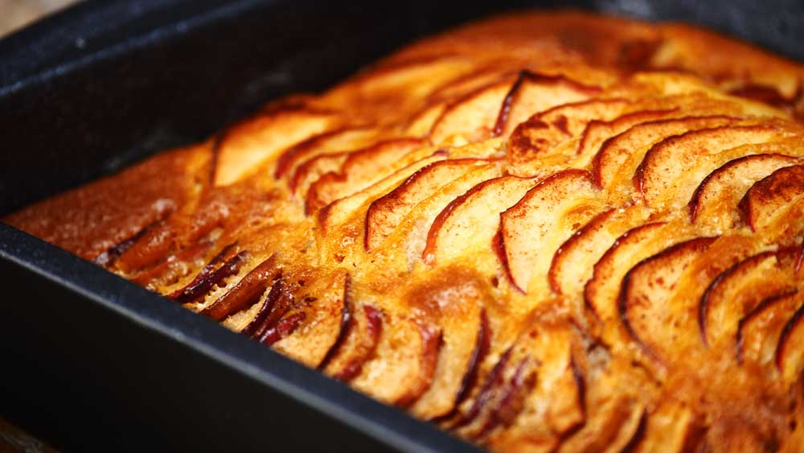
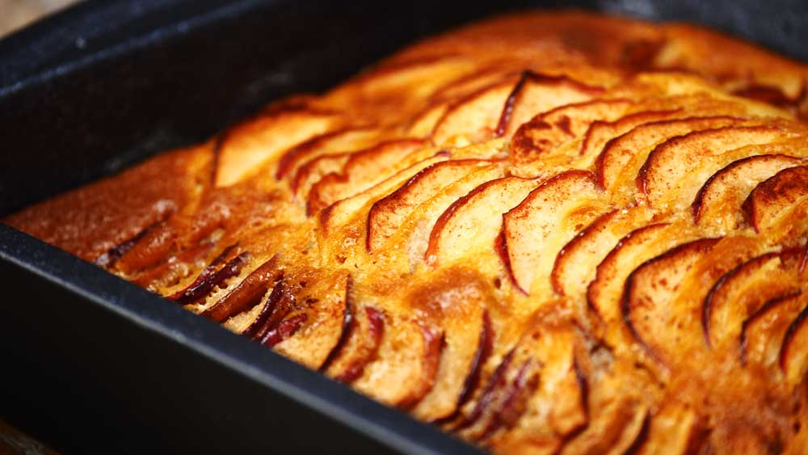

Jocuri de Gătit cu Sara online pentru fete
2021.03.24 15:44

PRINCIPALA Noi Tort Pizza Spanac Rotolo
Rating Jucat 1K
Vorbind despre ingredientele preferate, doar câțiva oameni își vor ...
Joaca acum Banana descompune placintaRating Jucat 1K
Placinta de banane dulce este un astfel de desert grozav. Este timpul ...
Joaca acum Mini Pop TartsRating Jucat 1K
Gustările dulci, cu topuri colorate și gustul diferit reprezintă o ...
Joaca acum Pui fettuccine AlfredoRating Jucat 1K
Bonjorno! Sunteți gata să gătiți câteva dintre cele mai bune paste ...
Joaca acum Caramele de prajitură de șaramelRating Jucat 1K
Dacă a existat un concurs pentru cel mai seducător fel de mâncare vreodată,...
Joaca acumGătit cu Sara
1 2 3Tiramisu cupe
JucaCasa din turta dulce
JucaBurritos
JucaPizza burgeri
JucaTort roșu de catifea
JucaCireș cu cusătură în sus
JucaGyros
Jucaînghețată de căpșuni
JucaCina de Craciun
JucaZmeură de ciocolată din zmeură
JucaPui fettuccine Alfredo
JucaCiocolată de mousse tort
JucaKebab
JucaQuesadilla
JucaPaste carbonara
JucaPaella
JucaPizza de Valentine
JucaMini Pop Tarts
JucaChiftetele suedeze
JucaRatatouille caserola
JucaTorturi de Halloween
JucaLasagna
JucaCiocolată prăjitură cu brânză mure
JucaTort de maimuță
JucaCake pops
JucaTartă cu fructe
JucaBBQ sandwich de pui
JucaCaramele de prajitură de șaramel
JucaSalată de cartofi
JucaClătite
JucaParfait de capsune
JucaMacarons
JucaSpanac Rotolo
JucaBanana descompune placinta
JucaTrifle
JucaNegrese
JucaArdei umpluti
JucaGogoși
JucaTorturi de nuntă
JucaCeai de înghețată
JucaPaște prajituri de zahăr
JucaSupă de cartofi
JucaBanane briose
JucaSupa de pui
JucaTaco cu peste
Juca 1 2 3Familiarizați-vă cu o colecție largă de jocuri de gătit numită Clasa de gătit cu Sara. Aruncați o privire nouă asupra combinației reușite de divertisment și educație online.
BINE ATI VENIT IN O LUME DE MAGIC CULINAR
Jocurile culinare devin din ce în ce mai populare. Mulți oameni au descoperit că nu numai că mănâncă mâncărurile lor preferate, dar și le gătește este o distracție extraordinară. Cea mai ușoară modalitate de a vă bucura de anumite procese culinare este folosirea jocurilor și aplicațiilor online: nu aveți nevoie de mult timp liber, de a cumpăra produse sau de a vă îngrijora dacă rezultatul final este satisfăcător. Este suficient doar să începeți un joc și să vă bucurați de acest proces!
Sara’s Cooking Class în limba română a fost creată ca unul dintre numeroasele jocuri culinare, totuși imediat după lansare, această divertisment online a devenit incredibil de popular și a jucat în întreaga lume. Fiind pe piata jocurilor de noroc de ani de zile, jocul este inca popular si este cu adevarat un exemplu de aur pentru jocurile online.
CE ESTE DESPRE JOC
Dacă aveți o privire scurtă asupra jocului, nu veți vedea nimic special în el. Cu toate acestea, dacă sunteți mai atent, puteți vedea că jocul este o combinație minunată și foarte talentată de două genuri populare: o clasă educativă și un concept de divertisment. Fiecare versiune de joc se bazează pe o rețetă atent selectată. Jocul reflectă toate instrucțiunile și sfaturile necesare pentru gătitul vasului offline la bucătăria dvs. la domiciliu.
Puteți folosi jocul ca și divertisment pentru a vă relaxa și pentru a vă distra sau alege-l ca ghid pentru gătit.
CARE JOCUL ESTE FĂCUT PENTRU
Clasele de gătit cu Sara sunt populare în rândul copiilor și adolescenților care sunt interesați de culinare și doresc să descopere rețete noi și să știe mai multe despre bucătăria din diferite țări.
Cu toate acestea, jocul este, de asemenea, interesant și util pentru adulți. Explică modul de gătit multe feluri de mâncare, inclusiv cele care par foarte complexe sau dificil de rezolvat. Jocul oferă multe sfaturi practice care pot fi utilizate cu succes în viața reală.
Sara’s Cooking Class este un fel de joc de familie pentru fete și băieți care poate uni mai multe generații și poate deveni un motiv pentru a vă petrece timpul împreună și pentru a vă inspira pentru câteva experimente minunate și gustoase din bucătăria familiei.
TREI MOTIVE PENTRU ÎNCERCAREA
Sensul practic al jocului. Dacă jocul este jucat de un copil sau de o persoană adultă, acesta oferă o mulțime de cunoștințe utile și practice care pot fi folosite în viața de rutină sau pot deveni o sursă de inspirație pentru alegerea unei profesii viitoare. Diversitatea alegerilor. Clasa de gătit cu Sara este o colecție de jocuri care cuprinde mai mult de 100 de versiuni. Fiecare dintre ele se bazează pe rețetă diferită și are un design unic și imagini. Software de înaltă calitate. Aceste jocuri sunt dezvoltate într-un mod excelent. Atât funcțiile vizuale, cât și cele practice ale jocurilor sunt verificate cu atenție și actualizate periodic. Mai mult, dezvoltatorii lansează noi variante de joc cu grafică și design mai moderne în mod regulat.Este timpul să verificați uriașa colecție de jocuri de gătit cu Sara și să alegeți unele dintre cele mai bune care vor deveni preferatele dvs.!
Copyright © Gătit cu Sara , 2018-2021.
Toate drepturile rezervate proprietarilor de drept
Informații de contact | Politica de confidențialitate
- JOCURI DE GATIT - Cele mai noi
- Aparate de gatit cu aburi & Deshidratoare | Alege ...
- Jocuri de Gătit cu Sara online pentru fete
- Vase de gatit - Auchan online
- Gătit Jocuri Gătit - Y8.COM
- Vase pentru gătit - IKEA
- Ustensile de gatit - crockpot-romania.ro
- Mâncare Jocuri Mâncare - Y8.COM
- Aparate de gătit multifuncţionale - Tefal
- Cum să gătești ca carnea de porc să fie moale - cele mai ...
- JOCURI DE GATIT - Cele mai noi
Fii parte din comunitatea bucătarilor Gatesc.ro Bucataria pasionatilor de gatit Descopera mii de retete culinare testate si atent selectate
- Aparate de gatit cu aburi & Deshidratoare | Alege ...
Un aparat de gătit multifuncţional pentru toate preparate dumneavoastră preferate! Diversele programe de gătit automate vă permit să realizaţi acasă în orice moment preparate uşoare, practice, sănătoase şi delicioase. După încheierea ciclului de gătit, aparatul de gătit multifuncţional vă păstrează preparatele la temperatura optimă până în momentul servirii.
- Jocuri de Gătit cu Sara online pentru fete
Una dintre cele mai misto chestii atunci cand stai toata ziua in bucataria de teste pentru retetele de pe blog, pe langa faptul ca apuci sa gatesti cu toate ingredientele de sezon, e ca reusesti sa te joci cu tot felul de gadgeturi noi. Cum e si situatia de fata. Auzisem de Philips Airfryer in …
- Vase de gatit - Auchan online
Jocuri Gătit. Jocurile de gătit au început în timpul primelor zile ale jocurilor browser. Unul dintre primele jocuri de gătit de pe Y8 a jost un vechi joc barbeque (BBQ) făcut ca advertisement game pentru a promova un brand jucătorilor. Acest trend a continuat, unul dintre primele jocuri pe care mi-l amintesc era numit Better BBQ Challenge.Un alt deja vechi joc care creează ...
- Gătit Jocuri Gătit - Y8.COM
Joacă Jocuri Mâncare pe Y8.com. Dacă îţi place să mănânci mâncare, precum şi să o găteşti, atunci vei găsi multe de preparat precum şi de mâncat. Încearcă jocuri precum Papas Burgeria sau Cooking Mama. Încearcă câteva Jocuri Mâncare pe Y8.com
- Vase pentru gătit - IKEA
Jocuri de Gatit. Multe jocuri de gatit sunt acum disponibile in mod gratuit pentru copiii pasionati de bucatarie. Pregatiti un cordon bleu, vafe de Craciun, inghetata, gustari, pizza, chiftele si multe alte preparate delicioase.
- Ustensile de gatit - crockpot-romania.ro
Joaca jocuri de gatit si gateste acum in jocurile de gatit impreuna cu Sara si alte bucatarese online. Gatitul este o arta fara de aflate la pagina 1
- Mâncare Jocuri Mâncare - Y8.COM
21.12.2019 - Explore mirela's board "idei de gatit", followed by 120 people on Pinterest. See more ideas about gătit, rețete culinare, mâncare.
- Aparate de gătit multifuncţionale - Tefal
Ai nevoie de niște vase de gătit noi? Descoperă gama noastră de accesorii pentru gătit, ce include produse de calitate, rezistente, cu dimensiuni și beneficii diferite. Asortează-le cu accesoriile de bucătărie pentru a avea combinația perfectă pentru casa ta.
- Cum să gătești ca carnea de porc să fie moale - cele mai ...
BENEDEK & CO SRL CUI: RO 14527419 Reg. Com: J24/144/2002 Adresa sediu: Baia Mare Bd.Bucuresti Nr.34/34, jud. Maramures CONTACT Telefon: 0726333567 Email: comenzi@benedekco.com
Fii parte din comunitatea bucătarilor Gatesc.ro Bucataria pasionatilor de gatit Descopera mii de retete culinare testate si atent selectate
Un aparat de gătit multifuncţional pentru toate preparate dumneavoastră preferate! Diversele programe de gătit automate vă permit să realizaţi acasă în orice moment preparate uşoare, practice, sănătoase şi delicioase. După încheierea ciclului de gătit, aparatul de gătit multifuncţional vă păstrează preparatele la temperatura optimă până în momentul servirii.
Una dintre cele mai misto chestii atunci cand stai toata ziua in bucataria de teste pentru retetele de pe blog, pe langa faptul ca apuci sa gatesti cu toate ingredientele de sezon, e ca reusesti sa te joci cu tot felul de gadgeturi noi. Cum e si situatia de fata. Auzisem de Philips Airfryer in …
Jocuri Gătit. Jocurile de gătit au început în timpul primelor zile ale jocurilor browser. Unul dintre primele jocuri de gătit de pe Y8 a jost un vechi joc barbeque (BBQ) făcut ca advertisement game pentru a promova un brand jucătorilor. Acest trend a continuat, unul dintre primele jocuri pe care mi-l amintesc era numit Better BBQ Challenge.Un alt deja vechi joc care creează ...
Joacă Jocuri Mâncare pe Y8.com. Dacă îţi place să mănânci mâncare, precum şi să o găteşti, atunci vei găsi multe de preparat precum şi de mâncat. Încearcă jocuri precum Papas Burgeria sau Cooking Mama. Încearcă câteva Jocuri Mâncare pe Y8.com
Jocuri de Gatit. Multe jocuri de gatit sunt acum disponibile in mod gratuit pentru copiii pasionati de bucatarie. Pregatiti un cordon bleu, vafe de Craciun, inghetata, gustari, pizza, chiftele si multe alte preparate delicioase.
Joaca jocuri de gatit si gateste acum in jocurile de gatit impreuna cu Sara si alte bucatarese online. Gatitul este o arta fara de aflate la pagina 1
21.12.2019 - Explore mirela's board "idei de gatit", followed by 120 people on Pinterest. See more ideas about gătit, rețete culinare, mâncare.
Ai nevoie de niște vase de gătit noi? Descoperă gama noastră de accesorii pentru gătit, ce include produse de calitate, rezistente, cu dimensiuni și beneficii diferite. Asortează-le cu accesoriile de bucătărie pentru a avea combinația perfectă pentru casa ta.
BENEDEK & CO SRL CUI: RO 14527419 Reg. Com: J24/144/2002 Adresa sediu: Baia Mare Bd.Bucuresti Nr.34/34, jud. Maramures CONTACT Telefon: 0726333567 Email: comenzi@benedekco.com
 
